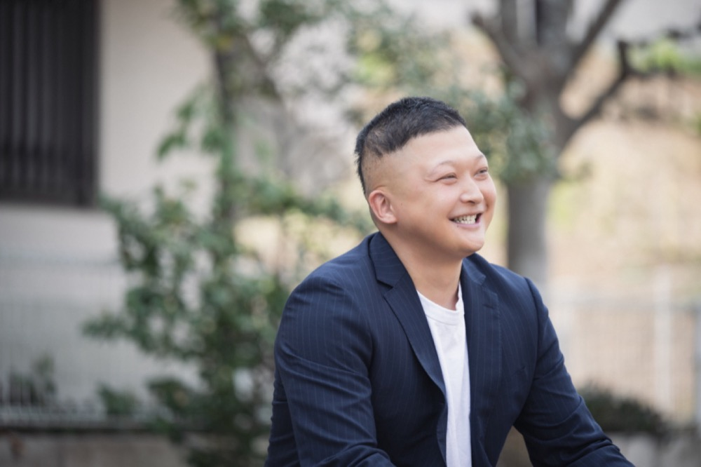
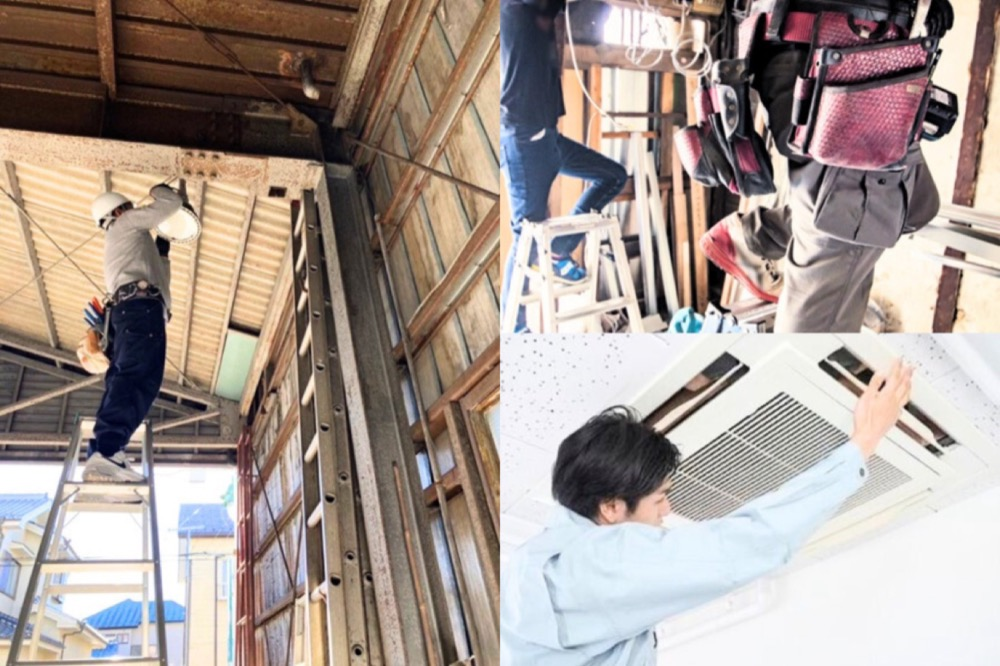
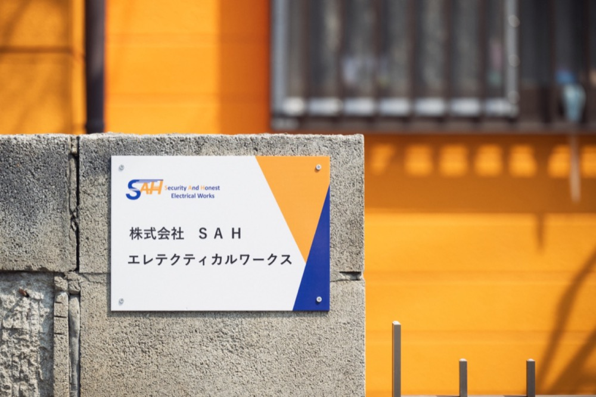
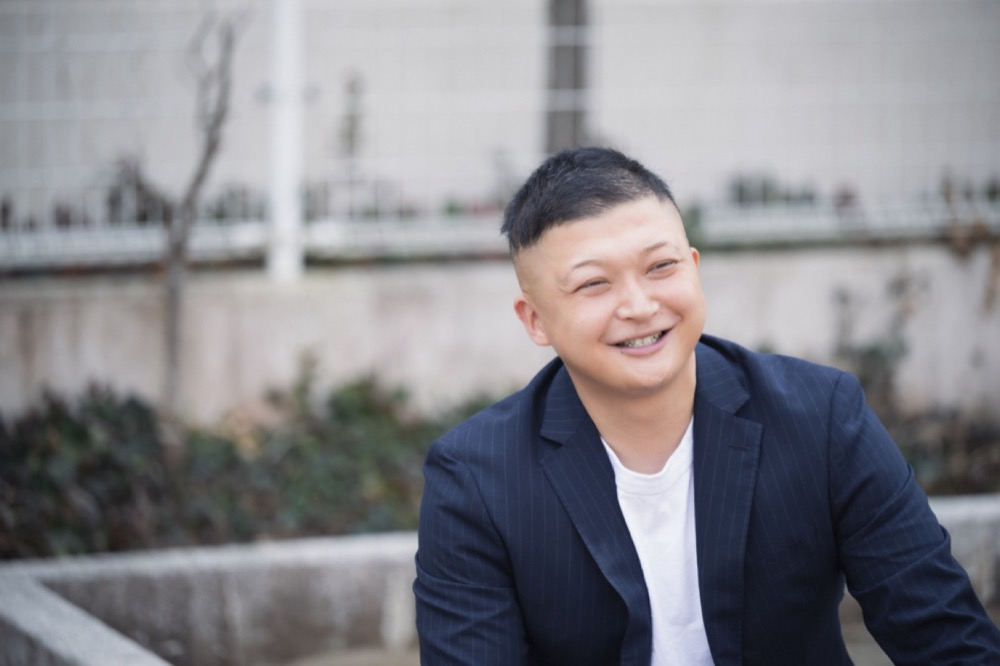

“真摯さ”を追求する会社
高杉 旭Akira Takasugi
株式会社SAHエレテクティカルワークス 代表取締役
1992年生まれ、千葉県出身。市川工業高校建築科卒業後、建築・通信関連企業で経験を積み、第一種電気工事士や消防設備士甲種4類などを独学で取得。2024年に株式会社SAHエレテクティカルワークスを設立し、法人向けに電気・消防・空調・防犯・通信設備工事などを提供している。
企業サイトを見るTRACK 01
“真摯さ”を追求する会社

壁の中や天井の裏側を通り抜ける無数の電線。それは目に見えないけれど、まさに暮らしを支える大動脈だ。ビルが建つたび、家が生まれるたび、その内部では数え切れないほどの配線作業が緻密に行われている。建物が完成したときには既に見えなくなるが、その見えない場所にこそ、電気設備工事の技術と信念が込められている。
ヘルメットと安全靴を身につけ、静かな真剣さで仕事に向き合う。彼らが扱う配線や機器一つひとつに、専門的な知識と高度な技術が必要とされる。誤りが許されない緊張感の中で作業を行う職人たちの姿には、職人魂とも言える誇りと責任感がある。
電気設備工事は、ただ電気を通すだけではない。防犯や通信設備、空調や消防設備といった私たちの安心や快適さを支えるさまざまな仕組みもまた、彼らの手によって実現されているのだ。つまり彼らの仕事は、暮らしの快適さや安全性そのものを設計し、支えているといっても過言ではない。こうした仕事に必要なのは、技術力だけでなく誠実さも然りであり、また安全への徹底したこだわりでもある。電気が持つ危険性を熟知し、常に最高の品質と安全性を追求する姿勢こそが、信頼につながる。
TRACK 02
驚異的な成長スピード

学生時代は自由奔放で、勉強には縁遠い青年だったと話す高杉。しかしある日、真摯に人々のために尽力する現在の妻と出会い、人生が一変したという。「自分も世のため人のために本気で生きなければならない、直感でそう思いました」そう語る高杉は奮起し、電気設備工事の世界に身を投じる。そこからの高杉の熱量は凄まじく、独学で第一種電気工事士と消防設備士甲種4類という難関資格を取得、なんとその勢いで自らの会社を立ち上げた。
もちろん猪突猛進的に会社を作ったわけではない。高杉はある人物に出会ったからこそ、SAHエレテクティカルワークスという船が必要だと判断したのだ。
1人は、多田大輝。つねに冷静沈着で、仕事の完成度も高杉を唸らせるほどに完璧な男だ。すでにSAHエレテクティカルワークスで役員を担っており、クライアントからも絶大な信用を勝ち得ている。そしてもう1人は、三田村健太。オールラウンドプレイヤーとして、どんな現場であっても任務遂行能力がケタ外れに高く、その実力と人柄ゆえに社員からの信頼も厚い人物である。


TRACK 03
エレ「テ」クティカル
現在、高杉は社員や役員と共に資格取得に注力し、企業の競争力を高めることを使命としている。彼の経営哲学には儒学が強く影響している。「地の利は人の和に如かず」、つまり土地の利便性や市場の有利性も重要だが、人の結束や和には及ばないという理念だ。この言葉は彼の父親から伝えられたものであるが、すでに高杉自身のことばとして、SAHエレテクティカルワークスの経営の根幹を成している。
会社としてのこだわりも明確だ。社名の「テ」には、人の手を加えるという意味が込められている。機械化やAIの普及が進む現代において、人の手による丁寧な仕事にこだわり、顧客目線でのサービス提供を徹底していることを示している。「お客様が、ああここまでやってくれるのか、と喜んでいただけるような仕事がつねにできるように、目の前の仕事に毎日、真摯に向き合い続けなければならないと思っています。そのためには人の手が必ず必要ですから」
とはいえ課題も少なくない。建設業界における若手人材不足や、労働環境の改善。問題意識を明確に持っているからこそ、社員に対しては他社を凌ぐ報酬と福利厚生を用意し、根本から働き方改革を強く推進している。「よく働き、よく遊び、よく学び、よく休む」というSAHエレテクティカルワークスの社是が、その理念を象徴する。